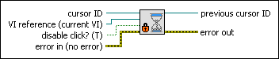

Set Busy VI
Owning Palette: Cursor VIs
Requires: Base Development System
Changes the appearance of the cursor on the front panel of a VI to the system busy cursor. You also can use this VI to disable the mouse and keyboard on the front panel.
Use the Unset Busy VI to change the cursor back to the default LabVIEW cursor and to enable the mouse and keyboard again. Using the Set Busy VI is similar to using the Set Cursor VI and wiring 1 to the icon input.
(Real-Time Module) You cannot use this VI in VIs that run on RT targets.

 Add to the block diagram Add to the block diagram |
 Find on the palette Find on the palette |